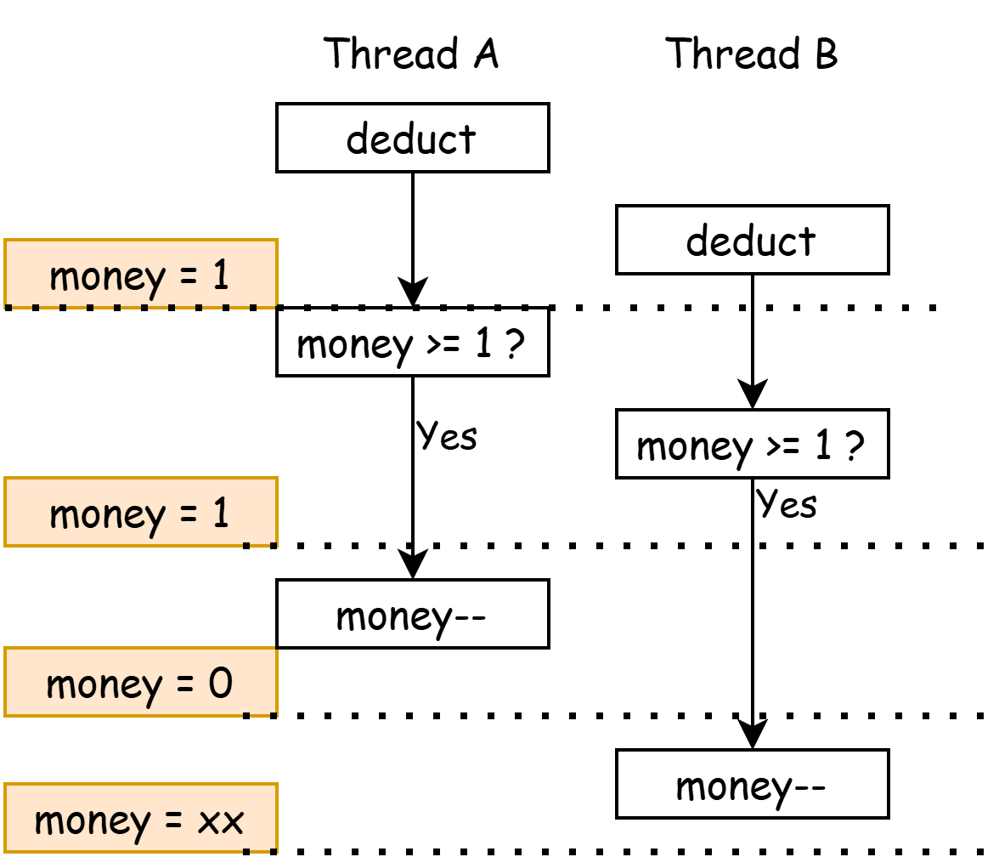
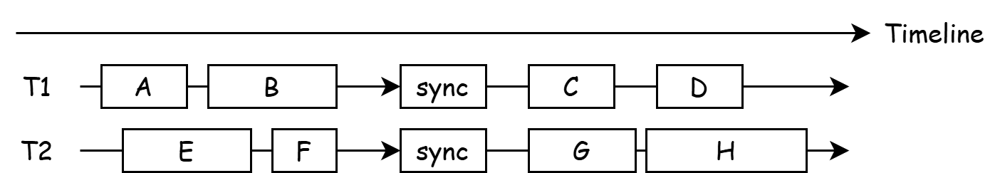
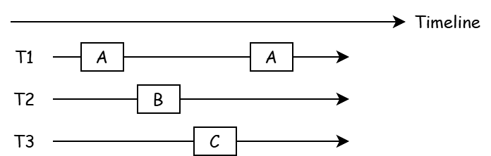
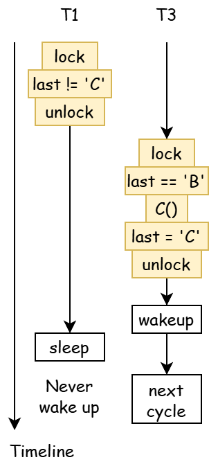
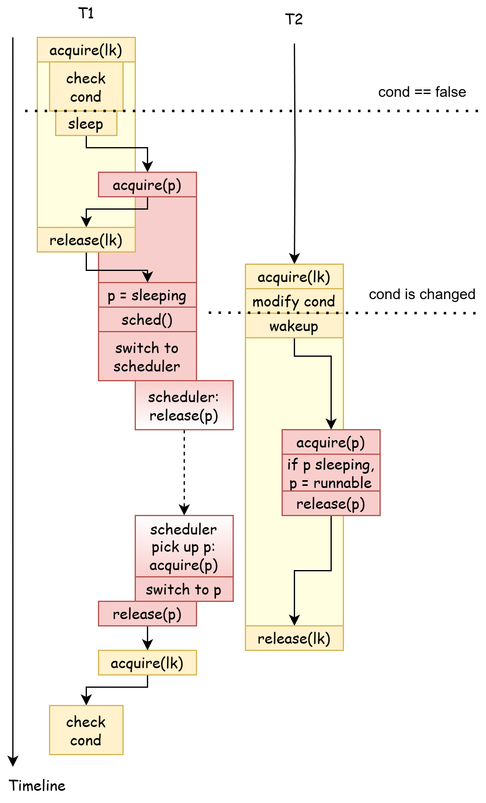

互斥与同步 Mutual Exclusion & Synchronization¶
synclab & xv6lab8 代码分支
https://github.com/yuk1i/SUSTech-OS-2025/tree/xv6-lab8
使用命令 git clone https://github.com/yuk1i/SUSTech-OS-2025 -b xv6-lab8 synclab 下载 synclab 代码。
进入 sync-lab 文件夹中，阅读 README.md（建议课后阅读） 以及执行里面的样例程序。
对于 xv6 部分的代码，请参照主仓库，使用 git clone https://github.com/yuk1i/SUSTechOS xv6lab8 下载代码。
多处理器编程¶
Multiple Processes Programming 多处理器编程，从入门到放弃。
我们常说：进程有独立的地址空间，而线程是共享地址空间。这引入了 共享内存 的概念：即一个进程内的多个线程，会共享一部分内存空间。
这就会引入一个问题：当一个线程在读写一个内存地址时，另一个线程也在读写同一个内存地址，那这时候会发生什么？
互斥 Mutual Exclusion¶
函数声明
我们会在之后的代码中使用一些简化的函数来表示线程创建等步骤：
-
create(func): 创建一个线程，它从给定的函数func起开始运行。 -
join(): 等待所有线程退出。 -
usleep(): 等待几个us。
在 synclab 代码包中，有一个我们自己写的 thread.h，它是一个对 pthread 的简单封装。
在理解我们为什么需要互斥前，我们先要明白 Data Race (数据竞争) 是怎么回事。
山寨支付宝¶
code
// alipay.c
#include "thread.h"
unsigned long money = 30;
void deduct() {
if (money >= 1) {
usleep(1);
money -= 1;
}
}
int main() {
for (int i = 0; i < 100; i++) create(deduct);
join();
printf("money = %lu\n", money);
}
使用 gcc -O2 alipay.c && ./a.out 编译并运行，体验一把亿万富翁。
山寨支付宝会创建100个线程，每个线程都检查钱包中是否有钱，如果有那就扣款（局部序）。usleep 用于强制触发一段时间的等待。
在这个问题中，钱包 money 即是共享资源。我们会发现，money 突然变成了一个很大的值，这是因为我们对 unsigned long 进行减法导致了溢出。我们考虑如下运行图，对所有白色方块强制排序（全局序）：

在最坏的情况下，钱包里只剩下1元时，两个线程都检查到了钱包余额为1元，所以它们俩都进行了扣款，然后就导致了溢出。
数学模型下的多线程
将 money >= 1 ? 和 money-- 两步骤称为 A 与 B。A永远在B之前执行，我们写作 A > B （ A happens-before B ）。
我们发现，多线程的运行步骤（全局序）是每个线程的运行步骤（局部序）的一个排列 (Permutation)。
全局序是四个步骤 {A1, B1, A2, B2} 进行排列，其中满足局部序 A1 > B1 和 A2 > B2 的排列均是一个合法的全局序。
例如，(A1, B1, A2, B2), (A2, B2, A1, B1), (A1, A2, B1, B2) 均是合法的全局序，而后者即是 bug 的根源。
如果你感兴趣，你可以试着回答这个问题：我们可以从数学上验证一个多线程程序的正确性，即枚举所有全局序，验证它们都不会造成 bug。从计算复杂性理论 (Computational complexity theory) 的角度而言，解这个问题是 P 问题、NP 问题、还是 NP完全问题。
如果我们不在 if (money >= 0) 后面加上 usleep，我们会发现程序的运行结果 大概率 是正确的。这是因为检查和扣款的指令序列太短了，以至于我们不太可能会造成 data race。但是，不太可能 != 绝对不会。在考虑并发问题时，我们需要的是正确性。
数学模型中，(A1, A2, B1, B2) 表示线程1和线程2都识别到了 money == 1，并且都将执行 money--。所以，解决这个问题的方式就是：不要让 (A, B) 变得可分割。我们可以从多个视角来理解：
-
我们不再允许
(A1, B1),(A2, B2)交错，即我们将(A1, A2, B1, B2)这种情况排除出“合法的全局序”中。 -
我们可以将
(A, B)打包 一个不可中断的整体。即，在其他CPU的视角下，这两个事件是在一瞬间就发生完了的（即原子的 (Atomic)）。也就是说，其他CPU不可能看到这个整体的中间状态。 -
注意到第二种描述，实际上就是 Critical Section。
Takeaway Message
人是一种单线程生物。在多处理器编程的模型下，单线程思维不再一定正确了，共享变量有可能在任何时刻被别人更改。
单核处理器¶
如果你成功理解了上述的三个视角，在单 CPU 下，解决方案变得非常明朗：我们不允许在 (A, B) 中间产生 Context Switch。这即是我们所学习的第一种实现互斥的方式：关中断。这也是内核实现 "不可中断的整体" 的方式。
但是，需要注意到关中断不是万能的。用户模式关不了中断。（回忆：允许 Interrupt 的条件）
原子 Compare-And-Swap 指令¶
对于山寨支付宝的例子，我们可以从另一个角度理解为什么会出问题：当线程2检查完 money，在进行 money-- 前，money的值已经被线程1改了；这时，线程2进行 money-- 的条件就不再满足了！
我们可以对此进行进一步抽象：要修改某个变量（内存地址）的值时，该变量的值已经不是原来的值了。
幸运的是，现代 CPU 基本都具有一种特殊的指令：当修改某个地址的值时，检查该地址的值是否为给定的原来的值。这种指令被称为 Compare-And-Swap 指令。绝大多数情况，这种指令会被以 原子的 方式执行；即，在其他 CPU 的眼里，该指令是 一瞬间 就完成的。
我们可以把 deduct 函数改成下面这样，它显著地区分了共享变量 money 和它的局部副本 local_money。每当想修改 money 的值时，我们使用 __sync_bool_compare_and_swap(&money, local_money, local_money - 1) 来修改 &money 这个内存地址的值，并且期望它现在的值和原来我们读到的值 ( local_money ) 一致：如果一致，则将 &money 修改为新值（ local_money-1 ），并返回true; 如果不一致，则说明有其他 CPU 对该内存进行了更新，不更新值，并返回false。该函数会生成一条原子指令 lock cmpxchg 。在 RISC-V 平台上，这会是一条 amoswap 指令。
// code: alipay2.c
// bool __sync_bool_compare_and_swap (type *ptr, type oldval, type newval).
// -> return true if the comparison is successful and newval is written.
unsigned long money = 30;
void deduct() {
long local_money;
do {
local_money = money;
if (local_money == 0)
break;
usleep(1);
} while(!__sync_bool_compare_and_swap(&money, local_money, local_money - 1));
// will be compiled to:
// 124e: f0 48 0f b1 15 f1 2d lock cmpxchg QWORD PTR [rip+0x2df1],rdx
}
gcc 下所有 __sync_ 开头的内置原子指令封装：https://gcc.gnu.org/onlinedocs/gcc-14.2.0/gcc/_005f_005fsync-Builtins.html
锁原语 Lock Primitive¶
尽管我们可以使用 __sync 等原子指令来解决山寨支付宝的例子，我们仍需要一种通用的、实现互斥的办法。
回顾 Mutual Exclusion 的最基本要求：同一时刻，有且只有一个线程能够执行。我们定义一套原语：lock/unlock （也可以写作 acquire/release ）：
-
所有期望实现 Mutual Exclusion 的线程都需要调用
lock方法。在同一时刻，只能有一个线程将从lock方法中返回。 -
当某线程成功从
lock方法中返回后，在该线程调用unlock前，其他所有线程不得从lock中返回。
我们可以发现：从 lock 返回后，即是 Critical Section 的开始，unlock 即是 Critical Section 的结束。
锁的实现¶
我们可以想当然地写出以下代码，status 是一个共享变量，多个线程同时调用 lock 方法，尝试把 status 改为 LOCKED。最终，只有一个线程成功执行到 status = LOCKED 处，其他线程都在 retry 中打转。
int status = UNLOCKED;
void lock() {
retry:
if (status != UNLOCKED) {
goto retry;
}
status = LOCKED;
}
void unlock() {
status = UNLOCKED;
}
但是，如果我们按照上述山寨支付宝例子进行分析，我们可以很容易地发现一处 data race：当某个线程通过了 if (status != UNLOCKED) 检查后，另一个线程执行了 status = LOCKED 处，这破坏了该线程上锁的条件。
所以，我们应该使用一个原子指令来替代 Compare and Set 这一步：每个线程都尝试原子地将 status 从 UNLOCKED 改为 LOCKED，CPU的实现保证了只有一个 CPU 能成功。对于那些没有成功的 CPU，它们会在这个 while 循环上一直等待。
如果没有原子指令
这也是为什么 Peterson 算法看起来比较复杂。在第一个正确的互斥算法(Dekker's Alg) 被发明的年代 (1960s)，CPU 还没有原子指令。
spinlock & sleeplock¶
在上面的章节，我们只定义了锁的一个基本属性：实现互斥。锁还有一个属性：如果一个线程抢不到锁，那它应该怎么办。
我们可以将锁分为两类：自旋锁 (spinlock) 和睡眠锁 (sleeplock)。
spinlock 会在抢不到锁的时候一直尝试抢，即上述 lock 方法，它会在 __sync_bool_compare_and_swap 失败时一直执行，CPU 就会在这一条指令上打转，就好像自旋一样。这种锁适用于 Critical Section 较短、能在固定时间内执行完毕的情况。
sleeplock 会在抢不到锁时将该线程置于睡眠状态 SLEEPING，并放弃 CPU 切换到 scheduler。等到原来持有锁的线程释放锁时，它需要负责唤醒等待者。这种锁适用于 Critical Section 较长、有着不确定时间的情况，例如等待 I/O。
在 唤醒等待者 这件事情上，sleeplock 可以用不同的实现方式：
-
直接唤醒所有的等待者，只有抢到锁的线程能继续执行下去，没抢到锁的重新进入睡眠。
-
只唤醒一个等待者，其余的保持睡眠。
xv6 spinlock¶
xv6 中，一个 spinlock_t 结构体包含最核心的一个 locked 标志，和其他用于调试的字段。
acquire 一个 spinlock_t 会使用 __sync_lock_test_and_set（原子指令 amoswap） 尝试将 1 写入 locked，并返回之前 locked 的值。如果返回值为0，则表示该 CPU 是唯一一个完成了将 locked: 0->1 的 CPU，即抢到锁了。
release 则原子地将 0 写入 locked。
// Mutual exclusion lock.
struct spinlock {
uint64 locked; // Is the lock held?, use AMO instructions to access this field.
// For debugging:
char *name; // Name of lock.
struct cpu *cpu; // The cpu holding the lock.
void *where; // who calls acquire?
};
// Acquire the lock.
// Loops (spins) until the lock is acquired.
void acquire(spinlock_t *lk)
{
uint64 ra = r_ra();
push_off(); // disable interrupts to avoid deadlock.
if (holding(lk)) // check against reentrance
panic("already acquired by %p, now %p", lk->where, ra);
// On RISC-V, sync_lock_test_and_set turns into an atomic swap:
// a5 = 1
// s1 = &lk->locked
// amoswap.d.aq a5, a5, (s1)
while (__sync_lock_test_and_set(&lk->locked, 1) != 0)
;
__sync_synchronize();
// Record info about lock acquisition for holding() and debugging.
lk->cpu = mycpu();
lk->where = (void *)ra;
}
// Release the lock.
void release(spinlock_t *lk)
{
if (!holding(lk))
panic("release");
lk->cpu = 0;
lk->where = 0;
__sync_synchronize();
// Release the lock, equivalent to lk->locked = 0.
// On RISC-V, sync_lock_release turns into an atomic swap:
// s1 = &lk->locked
// amoswap.w zero, zero, (s1)
__sync_lock_release(&lk->locked);
pop_off();
}
// Check whether this cpu is holding the lock.
// Interrupts must be off.
int holding(spinlock_t *lk)
{
int r;
r = (lk->locked && lk->cpu == mycpu());
return r;
}
__sync_synchronize() & Memory Ordering
我们在讲解中刻意忽略了 __sync_synchronize() 的细节。该函数与 CPU 的 Memory Ordering (内存序) 有关，其原理和细节已经超出了本科操作系统课程的范畴。
简而言之，核心对内存的写入，会最终 (eventually) 对其他核心可见。Relaxed Memory Order (RISC-V, ARM) 没有保证：某核心前后两个 Store 在被其他核心 Load 时，观测到的值一定是 Store 在代码中的顺序。 而 x86 (IA-32, amd64) 平台为 Total Store Order，核心 Store 的顺序在其他核心的视角下一定为 Store 在代码中的顺序。这也是 Windows on ARM 难以模拟 x86 软件的原因。
再简而言之，其他核心会先观测到锁被释放，然后观测到理应在 Critical Section 中被覆盖的旧值。
如果你对此感兴趣，推荐阅读以下材料：
-
https://jyywiki.cn/OS/2025/lect13.md (13.4 放弃 (3)：全局的指令执行顺序)
-
riscv-spec-v2.1.pdf, Section 6.1, Specifying Ordering of Atomic Instructions
-
https://people.mpi-sws.org/~viktor/papers/asplos2023-atomig.pdf
关中断¶
我们使用 push_off() 和 pop_off() 表示一对 关中断/开中断的操作。具体细节请参照 Context Switch 一章。
锁的检查¶
如果我们在已经持有一把锁的情况下，再尝试对这把锁上锁会怎么样？我们会永远卡在上锁的 spin loop 中。 以及，在一个进程持有一把锁并陷入睡眠时，其他进程尝试上锁也会永远卡死。
这就是为什么我们在 sched() 中检查了当前 CPU 持有了多少把自旋锁。
void sched() {
// ...
if (mycpu()->noff != 1)
panic("holding another locks");
swtch(&p->context, &mycpu()->sched_context);
// ...
}
对于 Kernel Trap，我们不希望出现嵌套中断。
我们会在 kernel_trap 中检查 Trap 深度，如果遇到了嵌套中断，则panic报错。
void kernel_trap(struct ktrapframe *ktf) {
mycpu()->inkernel_trap++;
if (cause & SCAUSE_INTERRUPT) {
if (mycpu()->inkernel_trap > 1) {
// should never have nested interrupt
print_sysregs(true);
print_ktrapframe(ktf);
panic("nested kerneltrap");
}
}
}
我们需要确保在 kernel_trap 下中断一直为关的。所以，当我们尝试在 Kernel Trap 上下文中通过释放锁打开中断，内核也会报错：
void pop_off(void) {
struct cpu* c = mycpu();
c->noff -= 1;
if (c->noff == 0 && c->interrupt_on) {
if (c->inkernel_trap)
panic("pop_off->intr_on happens in kernel trap");
// we will enable the interrupt, must not happen in kernel trap context.
intr_on();
}
}
互斥与同步¶
互斥 (Mutual Exclusion) 是指 在同一时刻，只有一个线程 能够执行。
同步 (Synchronization) 是指多个线程之间的事件 按某种顺序执行 ，我们称之为 happens-before。
我们可以用现实的例子来描述这两件事情。
-
考虑有一个厕所单间，有许多人需要上厕所。但是，在同一时刻，只有一个人能呆在这个厕所单间里面。
这个问题中，“厕所” 即是共享资源。
-
考虑一个十字路口的红绿灯：每个方向上，有机动车道的红绿灯；与之垂直的，有人行斑马线的红绿灯。我们要求，在机动车道亮绿灯前，与之垂直的斑马线一定已经亮红灯。
这个问题中，我们定义了
斑马线亮绿灯happens-before机动车道亮红灯。
我们需要注意到，互斥并不一定代表着同步：例如 A、B、C 三个事件互斥，这表示它们不能同时执行；但这并不代表着它们执行的顺序一定是 A > B > C。
同步 Synchronization¶
同步 表示我们希望控制事件发生的先后顺序：A > B > C，形成受我们控制的 "happens-before" 关系。
理解同步¶
同步通常用 等待 来描述。
例如，三个人一起约饭，他们先约定在一号门集合，再一起前往宝能城。在这样的表述中，三人就 "在一号门集合" 这件事情上完成了同步。对于每个人而言，它需要等待另外两个人到来，才执行下一个操作：前往宝能城。
事件即是代码的执行，而顺序则是每条代码之间的 "happens-before" 关系。
- 在单线程程序中，代码是天然地按照顺序 "happens-before"。
- 在多线程程序中，同一个线程中的事件（代码的执行）仍然保持着它们的 "happens-before" 关系；而不同线程之间的事件（代码的执行）则没有任何约束。
同步则是让不同线程之间，在某个事件（代码的执行）点上，重新构建 "happens-before" 关系。

我们依然用 A > B 表示 A happens-before B。我们可以分别列出 T1 和 T2 的内部的 "happens-before" 关系：
-
T1:
A > B,B > sync,sync > C,C > D -
T2:
E > F,F > sync,sync > G,G > H
假设 T1 和 T2 在 sync 这个事件上都会等待对方执行到这里再继续，那么我们可以说 T1 和 T2 完成了一次同步，我们实现了不同线程之间的 "happens-before" 关系： B > sync > G, F > sync > C。
条件变量¶
假设我们有三个线程，它们各自死循环地执行 A、B、C 三个函数，我们期望这三个函数总是以 A -> B -> C -> A 的顺序被运行：

考虑 T2，它什么时候能执行 B ？我们要求 A happens-before B：只有 A 事件发生后，B 才能得到执行。
我们非常顺利地写出了 B 能够执行的条件。我们因此也将同步问题转换成了：检查条件是否满足。
int last = 'C';
void T1() {
while (1) {
while (last != 'C'); // wait for last == 'C'
A();
last = 'A';
}
}
void T2() {
while (1) {
while (last != 'A'); // wait for last == 'A'
B();
last = 'B';
}
}
void T3() {
while (1) {
while (last != 'B'); // wait for last == 'B'
C();
last = 'C';
}
}
接下来，我们首先需要考虑两个问题：如何正确设置 Critical Section，以及在等待条件时应该干什么。
last 状态变量显然是一个共享变量，它会被三个线程分别读写。所以，对它的访问需要加锁保护。
mutex_t mtx;
int last = 'C';
void T1() {
while (1) {
lock(&mtx);
while (last != 'C'); // wait for last == 'C'
A();
last = 'A';
unlock(&mtx);
}
}
而在 while 等待循环中，我们 不能一直持有互斥锁 mtx ，因为我们需要其他线程来更改 last 状态变量。
所以，我们在判断条件后，如果发现条件不满足，则释放锁并将自己陷入睡眠，并在自己被唤醒后重新上锁。
因此，在修改条件后，我们需要唤醒所有人来再次检查条件。
这样的设计满足了两个要求：
- 检查同步条件
last时，当前线程持有锁。 - 同步条件检查通过后，当前线程持有锁（即执行
A的部分）。
mutex_t mtx;
int last = 'C';
void T1() {
while (1) {
lock(&mtx);
while (last != 'C') {
unlock(&mtx);
sleep(myself);
lock(&mtx);
}
A();
last = 'A';
unlock(&mtx);
wakeup(all);
}
}
但是，这里面存在一点问题，考虑如下的执行图，黄色部分为 Critical Section，它们的执行是不可与其他线程的 Critical Section 重叠的。

在某种情况下，T1 unlock 后并没有立即陷入 sleep，反而 T2 在 lock 得到锁后先一步调用了 wakeup，而此时 T1 还没有陷入睡眠，自然也不会被唤醒。而在 T1 睡眠后，再也没有线程能够唤醒它了，至此，所有的线程都进入了睡眠模式。
我们将这种问题称为 "The Lost Wake-Up Problem".
这种问题的根本原因是：我们在标记自己为 SLEEPING 前，就将 mtx 解锁了。但是我们又不能先 sleep() 再 unlock()，因为 sleep 不会在被唤醒前返回，即 unlock() 永远不会被执行到。
所以，我们需要将 "标记自己为 SLEEPING" 和 "解锁 mtx" 两件事情视为一个整体，即将 "标记自己为 SLEEPING" 纳入 Critical Section。
至此，我们应该就能理解为什么 xv6 中的 sleep 方法，参数中包含一个 spinlock_t* 了。
注：在 xv6 中，访问 p->state 必须要持有 p->lock，所以 "标记自己为 SLEEPING"（或者说，别人发现我是 SLEEPING） 和 acquire(&p->lock) 是等价的。
void sleep(void *chan, spinlock_t *lk) {
struct proc *p = curr_proc();
// Must acquire p->lock in order to
// change p->state and then call sched.
// Once we hold p->lock, we can be
// guaranteed that we won't miss any wakeup
// (wakeup locks p->lock),
// so it's okay to release lk.
acquire(&p->lock); // DOC: sleeplock1
release(lk);
// Go to sleep.
p->sleep_chan = chan;
p->state = SLEEPING;
sched();
// p get waking up, Tidy up.
p->sleep_chan = 0;
// Reacquire original lock.
release(&p->lock);
acquire(lk);
}

为什么不用原子指令替代条件检查
因为真实情况下的条件可能没有简单到能使用一条原子指令表示，我们还是希望使用互斥锁（更加通用）来保护对条件的访问。
Lab 练习¶
-
假设
sum是一个共享变量，有三个线程并发地执行T_sum函数，那么等三个线程退出后，sum可能的最小值是什么？Hint: 怎么证明某个值是可能的最小值：1. 所有比它小的值都不可能。2. 存在某种并发顺序，使得产生该最小值的序列是合法的
采用我们的“数学模型”：每个线程有6个部分：(Load, Store, Load, Store, Load, Store)，有三个这样的线程，对它们进行排列，最后一次 Store 则为三个线程退出后
sum的值。 -
使用 gcc 内置的原子 CAS 函数
__sync_bool_compare_and_swap来解决多线程自增的问题。volatile int sum = 0; void T_sum() { for(int i=0;i < 10000; i++) { // your code here: increase sum atomically. } } int main() { for (int i=0;i<5;i++) create(T_sum); join(); printf("sum = %d\n", sum); }gcc 的文档：https://gcc.gnu.org/onlinedocs/gcc-14.2.0/gcc/_005f_005fsync-Builtins.html
-
在 "条件变量" 一章的末尾，T2 的
wakeup可以移出lk的 Critical Section 吗？即 T2 先release(lk)再wakeup()。